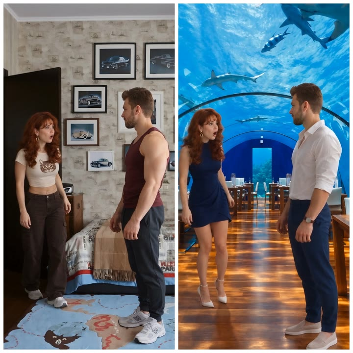

Меняйте одежду или фон. Человек остаётся прежним.
Новая одежда, другая локация, студийный свет — а лицо, движения и камера остаются из вашего исходного видео.
Ниже — бесплатная пошаговая инструкция: её достаточно, чтобы сделать всё самим. А если не хотите продумывать промпт вручную, его за вас напишет Prompt Engine.
Что можно изменить
Одно или сразу несколько.
Одежду
Например, «надеть» на человека платье с фото.
Место
Комната превращается в студию, улицу, отель, пляж.
Детали сцены
Добавить или убрать вещи, надеть очки, украшения, часы, сумку.
Свет и атмосферу
Время суток, погоду, студийное освещение.
Камеру
Ракурс или движение.
Только если вы об этом попроситеПодходит, если вы снимаете дома, а хотите студийную картинку, или хотите сменить образ без пересъёмки.
Что понадобится
Видео, которое хотите изменить
От 4 до 30 секунд. Подойдёт и крупный план, и съёмка в полный рост — главное, чтобы человек был хорошо виден и не слишком далеко от камеры.
Фото-референс
Фото одежды, места или общего стиля. Чем чётче фото, тем точнее результат. Одежда на нём должна быть видна целиком. Референсов может быть несколько.
Доступ к Seedance 2.5
Это нейросеть, которая будет редактировать видео. Я работаю с ней на Segmind: там выгодная цена генераций. Нужна регистрация и пополненный баланс.
Каждый запуск платный. Ориентир: на Segmind 30 секунд видео в 720p стоят около $7, цены платформ могут меняться. Короткие ролики дешевле, поэтому первые пробы удобно делать на коротком видео.
Открыть Seedance 2.5 на Segmind ↗По желанию: ChatGPT или Claude + Prompt Engine
Если хотите, чтобы промпт написала нейросеть. Хватит бесплатных версий. У бесплатного ChatGPT есть дневной лимит на загрузку файлов, обычно его хватает на одну задачу (3 файла). В бесплатном Claude лимиты другие, работать с файлами там удобнее.
- Промпт
- текстовое задание для нейросети: что сделать с видео.
- Референс
- фото-образец: «вот такую одежду» или «вот такое место».
- Генерация
- один запуск нейросети. Одна генерация = одно новое видео.
Главное правило: меняем только то, что попросили
Seedance не знает, что для вас важно. Если не сказать ему, что сохранить, он может изменить и лицо, и движения, и камеру. Поэтому в каждом промпте две части.
МЕНЯЕМ
То, что вы указали:
- одежда
- место и фон
- свет
- детали сцены
- ракурс камеры — только по запросу
СОХРАНЯЕМ
Всё остальное:
- лицо
- волосы
- тело и пропорции
- руки
- движения и жесты
- мимика
- композиция
- камера
- тайминг видео
Камера по умолчанию остаётся прежней. Нужен другой ракурс — напишите об этом в промпте.
Как сделать: 3 шага
-
01
Подготовьте видео и фото-референс
Выберите видео и найдите фото того, что хотите получить.
Референс можно не искать, а сгенерировать.Сделайте скриншот кадра из видео и попросите ChatGPT Images или Nano Banana изменить на нём одежду, фон или и то и другое. Получившуюся картинку используйте как референс.
Такой референс работает особенно хорошо: поза, ракурс и композиция на нём уже совпадают с вашим видео. Если лицо на сгенерированной картинке получилось немного другим — не страшно: лицо Seedance всё равно возьмёт из исходного видео.
Человек с референса не должен заменить вашего. Лицо, волосы и тело нужно взять из исходного видео, а с фото — только одежду или место. Об этом нужно прямо сказать в промпте: в шаблоне ниже и в Prompt Engine это уже прописано.Если референсов несколько, решите заранее, какое фото за что отвечает. Например: первое — одежда, второе — место. Одно фото может отвечать и за одежду, и за место сразу, но тогда это нужно прямо написать в промпте.
-
02
Напишите промпт — выберите вариант
Вариант А Сами, по простому шаблонуСкопируйте шаблон и замените текст в [квадратных скобках]. Пишите промпт на английском: так надёжнее. Если нужно, переведите свой текст в переводчике или попросите ChatGPT или Claude.
@Video1 is the original video. Keep the person exactly the same: face, hair, body, hands, movements, facial expressions and timing. @Image1 is the reference for [the outfit / the location / the outfit and the location]. Do not copy the person from @Image1. Change only: [her dress to the dress from @Image1]. Details: [dark blue fitted mini dress, sleeveless, high neckline]. Keep everything else unchanged. Keep the camera angle and camera movement the same as in @Video1. Match the light on the person to the new scene. Realistic result, no distortions.Что здесь что@Video1и@Image1— так Seedance понимает, о каком файле речь. @Video1 — ваше видео, @Image1 — первое загруженное фото, @Image2 — второе.[the outfit / the location / the outfit and the location]— выберите, что меняете: одежду, место или и то и другое сразу.Change only— что поменять, одной фразой. Например: Change only: her dress and the location — use both from @Image1.Details— опишите конкретно: цвет, ткань, фасон или само место. Слова «красиво» и «кинематографично» нейросеть не понимает как задание.- Остальные строки не меняйте: они защищают человека и камеру.
Если референса два, замените вторую строку на две:
@Image1 is the reference for the outfit only. @Image2 is the reference for the location only.Простой шаблон не гарантирует, что лицо, движения и камера сохранятся идеально: в сложных сценах многое зависит от деталей промпта. Почему так и что с этим делает Prompt Engine ↓
Вариант Б С Prompt Engine — промпт за вас напишет ChatGPT или ClaudePrompt Engine — это файл, который вы отправляете в ChatGPT или Claude. Нейросеть читает его и пишет подробный промпт под ваше видео и ваш референс. Сами вы файл не читаете, поэтому то, что он на английском, неважно.
- Сделайте скриншот кадра из видео, где хорошо видно человека и сцену. По нему нейросеть увидит композицию.
- Откройте новый чат и загрузите 3 файла в таком порядке:
- Prompt Engine (PDF)
- Фото-референс
- Скриншот кадра
- Скопируйте запрос, замените текст в [квадратных скобках] и отправьте.
Изучи и строго следуй прикреплённой инструкции Seedance 2.5. Создай готовый промпт. @Image1 — фото-референс, первое фото. Взять: [одежду / окружение / одежду и окружение]. Описание: [девушка в пледе, в горах]. @Video1 — исходное видео; второе фото — скрин его исходного кадра. Соблюдай формат и правила из инструкции.Если референса два, загрузите их по порядку, а скриншот — последним. Средние строки запроса будут такими:
@Image1 — фото-референс, первое фото. Взять: только одежду. Описание: […]. @Image2 — фото-референс, второе фото. Взять: только окружение. Описание: […]. @Video1 — исходное видео; третье фото — скрин его исходного кадра.С двумя референсами файлов будет четыре — в бесплатном ChatGPT лимита может не хватить, удобнее в Claude.
Что вы получите: готовый промпт на английском для Seedance и короткое пояснение на русском — что и почему в нём написано.
-
03
Запустите генерацию в Seedance 2.5
- Откройте Seedance 2.5 на Segmind (или на другой платформе, где он есть).
- Загрузите исходное видео и фото-референсы в том же порядке, что указан в промпте.
- Вставьте промпт и запустите генерацию.
В Seedance загружаются только видео и референсы. Файл Prompt Engine и скриншот кадра туда не нужны.Если результат не тот- поменялось лицо или движения — проверьте, есть ли в промпте строки о том, что сохранить;
- одежда или место не похожи — опишите их подробнее в Details;
- поменялось слишком много — меняйте за раз что-то одно: сначала одежду, потом место.
Частые ошибки
Писать «сделай как на фото»
Модель не поймёт, что именно взять. Пишите роль: @Image1 is the reference for the outfit.
Не писать, что сохранить
Тогда Seedance может изменить лицо, движения и камеру.
Описывать общими словами
«Красиво» — не задание. Описывайте цвет, ткань, место, свет.
Загружать Prompt Engine или скриншот в Seedance
Они нужны только в ChatGPT или Claude.
Почему простого шаблона иногда мало
Шаблон выше даёт рабочий результат в простых задачах. Но в сложной сцене — например, с двумя людьми, сменой места и движением воды — результат зависит от деталей, которые легко упустить.
Если пишете сами
Нужно продумать:
- одежду: ткань, крой, цвет, фактуру;
- новое место: что на переднем, среднем и дальнем плане;
- свет на человеке и на фоне, чтобы они совпадали;
- как ткань двигается и реагирует на ветер;
- движение в сцене: вода, листья, птицы;
- что запретить, чтобы не появились искажения.
С Prompt Engine
Делает это за вас:
- смотрит на ваш кадр и референс и описывает одежду и место конкретно;
- распределяет роли файлов, чтобы Seedance их не перепутал;
- согласует свет и тени с новым местом;
- добавляет естественное движение ткани и сцены;
- защищает лицо, тело, движения и камеру;
- проверяет, что ничего не забыто.
Из чего состоит промпт от Prompt Engine. Только те блоки, которые нужны вашей задаче:
FILES & ROLESчто берём из видео, что из референсаEDITING TASKчто именно меняемOUTFITодежда: ткань, крой, цвет, деталиENVIRONMENTновое место по планамNATURAL MOTIONветер, ткань, вода, листьяLIGHTINGсвет под новое местоCHARACTERзащита лица и телаMOTIONдвижения и тайминг без измененийCAMERAкамера как в оригиналеINTEGRATIONчеловек «внутри» сцены, а не вклеенCRITICALчто менять, что сохранить, что запрещеноQUALITYкачество и защита от искажений
Настоящий пример
В Seedance загрузили исходное видео и одно фото — сразу для одежды и места. Вот начало промпта, который написал Prompt Engine.

Хватит тратить генерации на пробы
Одна генерация 30 секунд в 720p на Segmind стоит около $7 — столько же, сколько Prompt Engine. Если он сэкономит хотя бы одну неудачную попытку, он уже окупился.
При покупке вы получаете два файла:
- Prompt Engine (PDF)Загружаете в ChatGPT или Claude — он пишет готовый промпт для Seedance 2.5.
- Примеры (PDF)Реальные кадры «до → после» и как готовый запрос выглядит в Seedance. Только для чтения, никуда не загружается.
2 PDF на английском, сразу после оплаты на Gumroad. Prompt Engine работает в ChatGPT или Claude, а промпт, который он пишет, подходит для Seedance 2.5 на любой платформе.
Подписывайтесь
Частые вопросы
Можно ли сменить одежду на видео так, чтобы лицо не изменилось?
Да. В Seedance 2.5 загружаете исходное видео и фото нужной одежды, а в промпте прямо пишете: лицо, волосы, тело и движения взять из видео (@Video1), с фото (@Image1) — только одежду, и не копировать человека с фото. Чем подробнее промпт, тем надёжнее сохраняется внешность.
Почему Seedance меняет лицо или движения и как этого избежать?
Seedance не знает, что для вас важно. Если в промпте не сказано, что сохранить, он может изменить и лицо, и движения, и камеру. Добавьте в промпт, что сохранить: лицо, волосы, тело, руки, движения, мимику, тайминг и камеру. Если всё равно меняется слишком много — меняйте за раз что-то одно: сначала одежду, потом место.
Какой длины видео можно редактировать?
От 4 до 30 секунд, результат получается той же длины, что исходник. Подойдёт и крупный план, и съёмка в полный рост — главное, чтобы человек был хорошо виден и не слишком далеко от камеры.
Сколько стоит одна генерация?
Зависит от платформы, длины видео и качества. Ориентир: на Segmind 30 секунд видео в 720p стоят около $7; на других платформах Seedance 2.5 может быть заметно дороже, и цены меняются. Короткие ролики дешевле — первые пробы удобно делать на них.
Нужен ли Prompt Engine, или можно написать промпт самому?
Не обязательно. Для простых задач — одна вещь или одно место — хватит бесплатного шаблона из инструкции. В сложных сценах (несколько людей, новое место, движение воды или ткани) результат зависит от многих деталей: Prompt Engine прописывает их за вас и помогает не тратить генерации на пробы.
Можно ли использовать Prompt Engine с бесплатным ChatGPT или Claude?
Да. В чат загружаются 3 файла: Prompt Engine, фото-референс и скриншот кадра. У бесплатного ChatGPT есть дневной лимит на загрузку файлов — обычно его хватает на одну задачу. С двумя референсами файлов будет четыре, тогда удобнее бесплатный Claude: лимиты там другие.